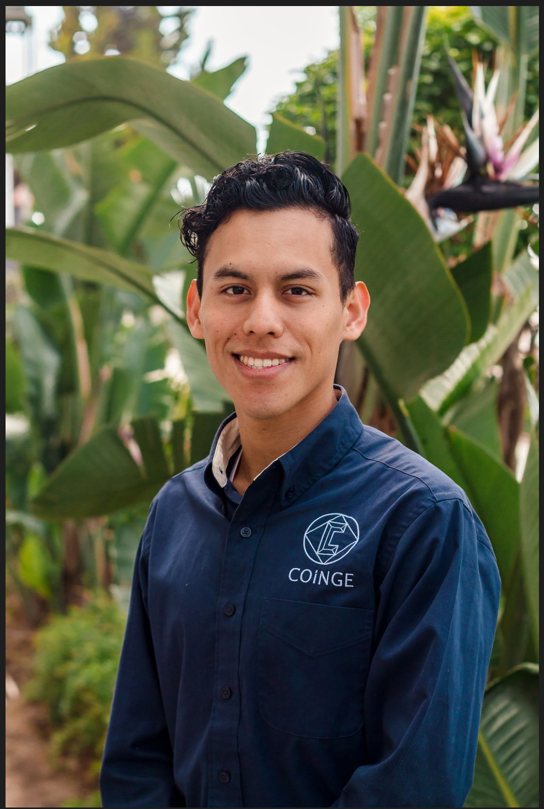
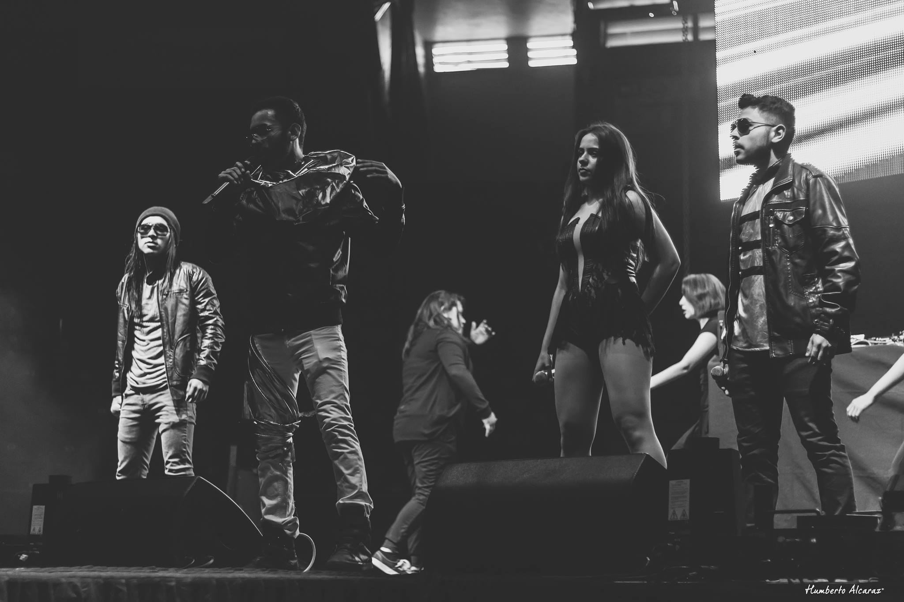
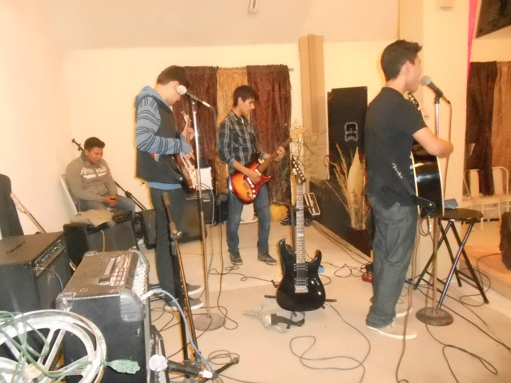
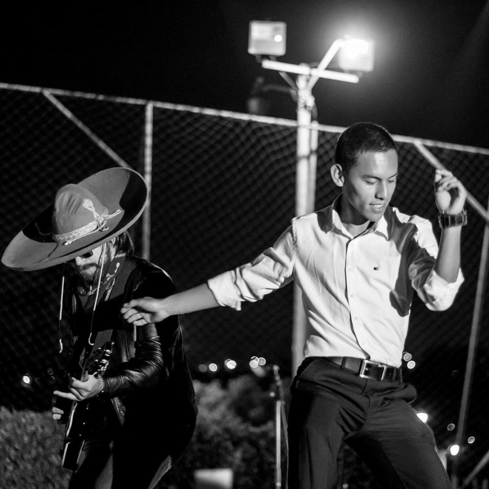

About me
I like getting involved in different activities to broaden my horizons.
Learning new skills has always been a passion of mine. During my years
as a college student I learned skills in CAD Design and I realy loved
it, but there was a semester where I had the chance to learn more about
programming and I gained a huge appreciation for it even though my
career was not 100 percent related to software development nor computer
science, so now I am trying to learn about what in the past I showed
interest in.
That is why I am currently enrolled in a Software Development course by
Springboard in which I'm learning the foundamentals for HTML, CSS and
JavaScript. I'm very excited about this new journey and I am eager to
apply my skills in real-world projects. My greatest strengths are
attention to detail and resilience, which enable me to enhance my
workspace’s productivity, efficiency and performance, thus overcoming
challenges and working through problems.
My General Interests
Besides my tech oriented interests, I also have fascination for many
sports, but I can mention the ones which I practiced for years, such as;
soccer, baseball, frontenis (similar to racquetball) and Tae Kwon Do.
And artistically speaking, I've developed basic skills of producing
music by watching Youtube Videos, playing guitar also by watching
Youtube videos, basic piano keyboard by taking lessons and hip hop
dancing by immitating dance routines from Youtube as well. Most of these
artistic skills were developed during my high school years and I still
practice them on my free time.
Pictures of My Interests





Go Back to CV